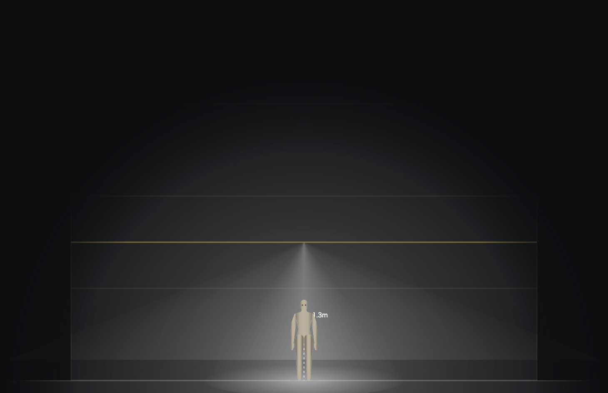
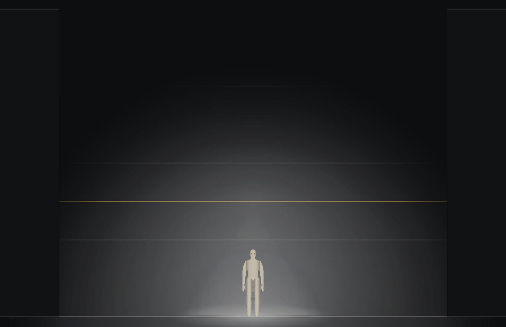

2026-09-14 · 人物修正は公開済み／案Bは比較試作として公開
逆光の表現を分け、距離操作を比べる
今回見るところ：「固定帯」と「実寸」のどちらで距離を調整しやすいか。実寸表示では、平面図の上下ドラッグ、側面図の左右ドラッグで「舞台前から」の距離が動きます。実寸比較後に最終確定する、というご指定を引き継いでいます。
公開版：前・横からの人物照明修正 · 案B：逆光の確認例を開く · 案B：前明かりも足した例を開く
確認例はこの試作のために作った照明設定です。元の添付スクリーンショットの保存データや実舞台写真の再現ではありません。案Bは別の保存領域を使い、製品本体には統合していません。
1. もやと光条
狙い点・軌道は保持し、そこから導く円錐の中の空気を描きます。面の光だまり、人物の受光、光源のまぶしさは別に扱います。舞台の手前端や狙い点を発光させません。
基準版（人物修正済み）
案B：もや 35
もやはLX cueごとに保存します。初期値35、なし0／うっすら35／濃い70。変更はUndoでき、別のキューへ移って戻ると値も戻ります。もやを変えても灯の狙い・軌道は変わりません。
2. 客席までの距離を同じ窓幅で比較
右の「調整」パネルの「距離表示」で切り替えます。実寸は舞台と同じ縮尺で12m先まで表示し、目盛りを出します。舞台が小さくなる代わりに距離を直接動かせます。遠方の点は数値欄でも変更できます。表示切替だけでは保存値を変更しません。
画像を押すと原寸で開きます。正面図の赤い丸は従来どおり舞台手前端の通過点を操作します。客席の狙い点の高さとは、向きを介して対応します。
3. 床・壁と側面の明るさ
床・壁だけの場面は人物修正済みの基準版の経路を維持します。逆光が混ざる場面では、床・壁の光だまりを保ち、奥の光条→人物→手前の光条を重ねます。正面はy、側面はxで奥行きを扱います。
条件が重なる点：Q2の「床壁だけの場面は同一」を優先し、側面の減光統一（Q5b）は現在の試作では逆光混在時に適用しています。床壁だけの場面にも統一すると、その場面の側面図は変わります。全場面での統一を選ぶ場合、この部分は画素同一の例外になります。
4. 外出中に進めた改善
光が通らない画素を計算対象から外し、光条の各層に専用の描画用キャンバスを割り当てました。静止時の解像度と光の式を維持し、操作中だけ光条を粗く描きます。操作後とウインドウ切替時には精細表示へ戻します。
案Bの保存一覧が壊れている場合は上書きを止め、編集中の内容をファイルへ書き出せるようにしました。不正な読み込みや描画途中の失敗では、元の編集内容へ戻します。容量不足でも既存の保存内容を保持します。
案B専用の使い捨てデータで検証しています。保存の失敗系・再読み込み結果。本体の保存領域や公開中の照明試作は変更していません。
5. 検証と残る範囲
このMacのSafariアプリでも、前明かりあり／逆光のみの人物表示、もや35→70、固定帯→実寸の切替結果を確認しました。速度の数値は下のPlaywright WebKit試験によるもので、Safari実機の計測値ではありません。
- 関連単体テスト35件。円錐、有限の床壁交差、カッター、人物の前・横の受光、描画領域の最適化を検査。
- ChromiumとWebKitで新旧の描画、もや操作、LX cue保存・再読込、未知のcueフィールドの保持、Undoを検査。詳細は結果JSON。
- 平面・側面の距離ドラッグとUndoを実ポインターで確認。WebKitの座標丸めを含め画面上1.1px以内。操作結果。
- 動きの計算をするrig-engine.jsは基準版と同じ内容。リムライトは第2段階のまま。
| 交差して動く8灯・8人／もや70 | 案B 改善前 | 案B 改善後 | 改善後 p95 |
|---|
| Chromium | 28.4ms | 11.4ms | 12.3ms |
| Playwright WebKit | 95ms | 25ms | 37ms |
1800×1300／DPR 1。狙いを各フレームで動かし、20回ウォームアップ後の30回。最終計測。改善前は96列12層、改善後は操作中72列10層。静止時は192列18層を維持します。人物とハンドルの精度は変えていません。描画関数の実行時間であり、実機のフレームレート保証ではありません。
WebKitでは、同じ計算結果でも1枚の描画用キャンバスを全層で使い回すと最終画像が揺れていました。層ごとに分けた版で再描画の安定性を確認しています。同じ精度での計算一致・再描画検査。Chromiumの最終画素一致と、WebKitの合成前データ一致は区別して記録しています。
残る確認：実寸表示の採否、床壁のみの側面を統一対象に含めるか、Safariでの長時間の操作感。操作中の負荷は改善しましたが、精細表示へ戻す瞬間の待ち時間と、実際の操作感は確認対象です。光条は表示用の近似で、細かいゴボの身体への投影・物体間の影・間接光・実舞台写真との一致は未確認です。
数値・適用範囲 · 設計会議と実装の記録 · 設計時の判断資料